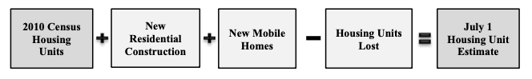

Surveys & Programs
Comparing Census surveys related to housing and population.
Census Surveys and Programs
The Census conducts over 130 surveys and programs each year, but a handful are especially useful for housing research. In this post I will compare three datasets that provide information on population and housing units: the American Community Survey (1-year & 5-year) and the Population Estimates Program.
American Community Survey
While all Americans are likely aware of the decennial Census, the American Community Survey (ACS) has become the “premier source for detailed population and housing information about our nation.”(US Census Bureau 2021) Unlike the decennial Census, which attempts to count every person living in the US, ACS estimates are derived from an annual sample of about 3.5 million addresses. There are nearly 50 subjects included in the ACS, with sub-tables available for each subject, leading to tens of thousands of detailed variables.
Every year, the Census Bureau releases a 1-year and a 5-year version of the ACS. The 1-year estimates are collected over a 12-month period for areas with at least 65,000 people, and have a higher margin of error; 5-year estimates are for areas with fewer than 65,000 people over a period of 60 months, and have a lower margin of error.(US Census Bureau 2020) ACS 5-year estimates should be labeled to show all years data was collected, not just the midpoint or year the dataset was released (for example “2015-2019 ACS 5-Year” is correct but not “2017 ACS 5-Year” or “2019 ACS 5-Year”).
When comparing data over time, the Census Bureau recommends using 1-year data, or to compare 5-year estimates that do not overlap, such as 2009-2013 estimates and 2014-2018 estimates. Five-year estimates are more precise, but they are also less likely to show year-to-year fluctuations or recent trends.(US Census Bureau 2020) Users should also research how ACS questions have changed over time, and whether certain variables/time frames should or should not be compared.
Lastly, the 2020 Census ran into significant data collection problems due to COVID. As such, the Census Bureau will not release its standard 2020 ACS 1-year estimates, but experimental estimates. The 5-year ACS will still be released as normal.
Population Estimates Program
The ACS was designed to provide information about the characteristics of a population, rather than basic counts of population and housing.(US Census Bureau 2020) The Census Bureau recommends that this data should instead be collected from the Population Estimates Program (PEP), available for states, metro/micro areas, counties, and places.
Rather than being based on a survey, the PEP estimates population by using the most recent decennial Census, combined with administrative records on birth, death, and migration rates.(Walker 2021) Housing unit estimates are determined by new residential construction, new mobile homes, and the estimated number of housing units lost.(US Census Bureau 2019)

PEP estimates are used as controls for other surveys including the ACS, American Housing Survey, and Housing Vacancy Survey.
Data Comparison
The Census recommends the PEP over the ACS for basic counts of population and housing. However, if you plan to also look at detailed characteristic data, the Census recommends using the ACS throughout your analysis (basically, don’t mix PEP and ACS estimates).1
I decided to see how the ACS and PEP data compare. Below is an interactive graph comparing ACS and PEP estimates of the number of housing units in Shelby County from 2010 to 2021.2 Though ACS 5-Year estimates are not really recommended for yearly time series, I included it for curiosity. Clicking on a dataset in the legend will show/hide the line.
Presently, the ACS 1-Year and PEP estimates are near identical; there was only a 30-unit difference in 2019 values. There was a bit of variation in 2011 and 2014-2016, mostly with the ACS overestimating the PEP values, but the variation was never more than 1,882 units (<0.5% of total estimate). Yet while the counts have been similar, the PEP values gradually increased over the decade while the ACS was more erratic, fluctuating downward in 2011 and 2017.
Meanwhile, the ACS 5-Year is more smooth than the 1-year data, with no downward fluctuations. But we can clearly see how the values lag behind the ACS 1-Year and PEP data. Five-year values are more representative of the midpoint year than the release year. For instance, 2015-2019 data is more representative of 2017 estimates than 2019.
The overall variations in ACS and PEP data were not large. I will primarily use ACS data, as it contains more variables and is available down to at least the tract level.
References
Footnotes
For more information on when to use the ACS vs the PEP, see the Census webinar/presentation/transcript: Comparing the American Community Survey and the Population Estimates Program.↩︎
The regular 1-year ACS for 2020 was not released. Due to low response rates, the Census Bureau instead released a set of experimental estimates for the 2020 1-year ACS. These estimates can be downloaded here.↩︎
Citation
@online{johnson,
author = {Sarah Johnson},
title = {Surveys \& {Programs}},
url = {https://sarahjohnson.io/surveys.html},
langid = {en}
}